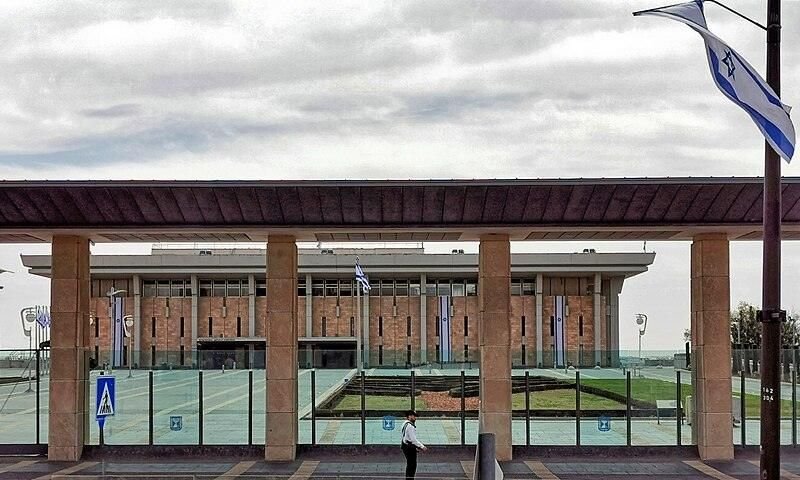
מצגת התמונות הרשמיתחבל ירושלים · נושא 6
מחוץ לחומות צמחה עיר אחרת: שכונות ותיקות עם אופי משלהן, מוסדות השלטון של מדינת ישראל, אתרי זיכרון, מוזיאונים, שווקים וחיי לילה. ומסביב לעיר, אתרים שמושכים צליינים יהודים, נוצרים ומוסלמים.
היציאה מהחומות
עד אמצע המאה ה־19 גרו כמעט כל תושבי ירושלים בתוך החומות. העיר העתיקה הייתה צפופה, השערים ננעלו בלילה, והתנאים היו קשים. מ־1860 התחילו לבנות שכונות בחוץ, ומהן צמחה העיר החדשה.
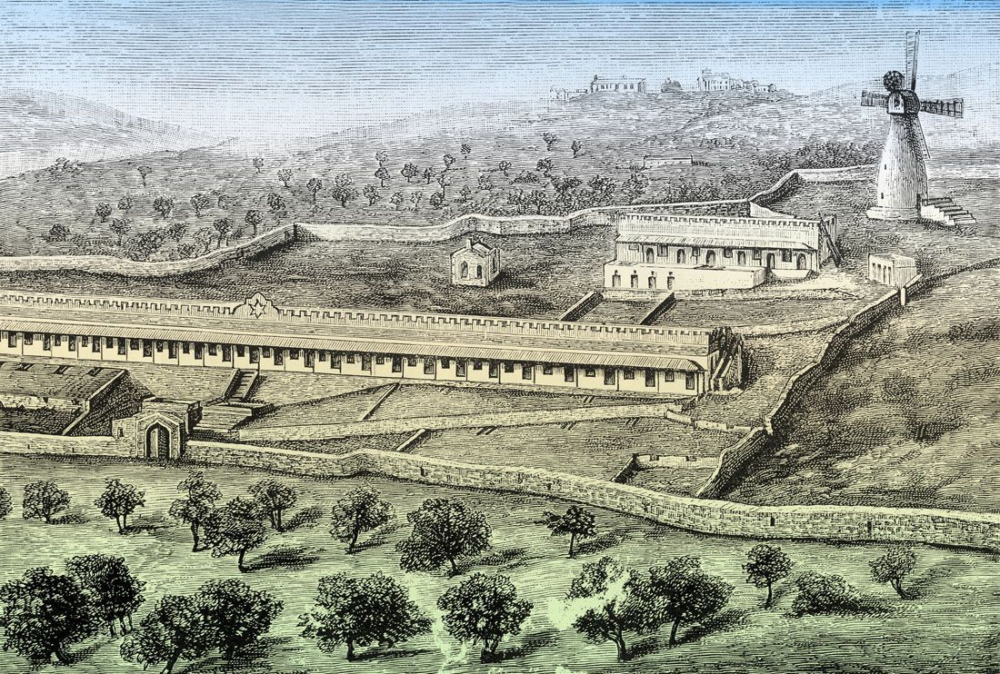
שכונות האבות
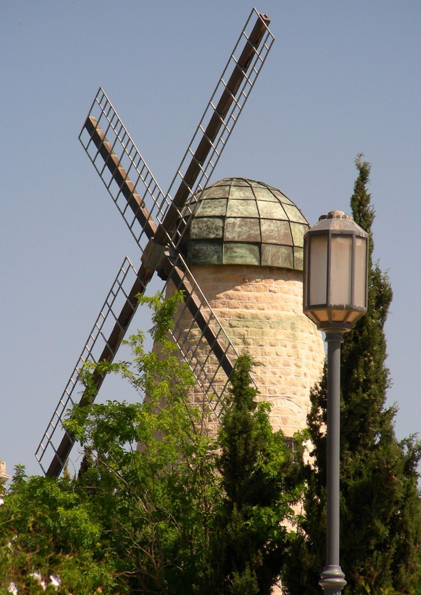
השכונה הראשונה מחוץ לחומות, מול העיר העתיקה. סמלה הוא טחנת הרוח של מונטיפיורי. הבתים שוקמו, ויש בהם היום מרכז כנסים, מרכז למוזיקה ובית הארחה. בימין משה גרים אמנים, ויש בה גלריות.
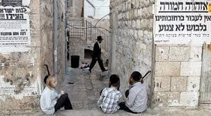
שכונה חרדית ותיקה. הביקור בה הוא מפגש עם אורח חיים דתי ששומר על מסורת בתוך עיר מודרנית. השכונה מבקשת ממבקרים ללבוש לבוש צנוע ולא להגיע בקבוצות גדולות.
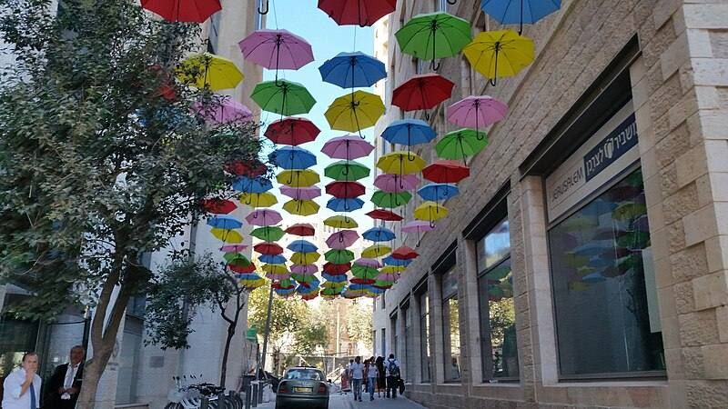
אחת השכונות הראשונות, במרכז העיר. היום מתחם של מסעדות, פאבים וחנויות, ליד מדרחוב בן יהודה.
בתי אבן של הטמפלרים לאורך רחוב עמק רפאים, שהפך לרחוב של מסעדות ובתי קפה.
כפר ציורי בין הרים מיוערים. לפי המסורת הנוצרית, מקום הולדתו של יוחנן המטביל, ויש בו כנסיות ומנזרים. גם גלריות ומסעדות.
נשאל בבגרות: "בחר שתיים מבין השכונות שצוינו והסבר מה מייחד כל אחת מהן" (מאה שערים, המושבה הגרמנית, עין כרם, משכנות שאננים, ימין משה).
קריית הלאום · גבעת רם
ירושלים היא בירת ישראל, ולכן כאן נמצאים המוסדות החשובים של המדינה. רבים מהם פתוחים למבקרים, והם ביקור חובה לתייר.
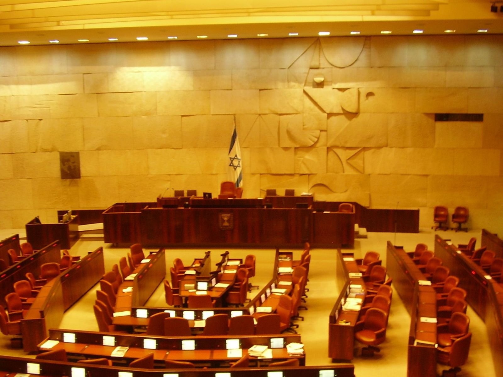
בית המחוקקים. ביקור בתיאום מראש: סיור מודרך וצפייה בדיון במליאה. מוצגות בה יצירות של מארק שאגאל, ומולה עומדת המנורה שתרמו חברי הפרלמנט הבריטי.
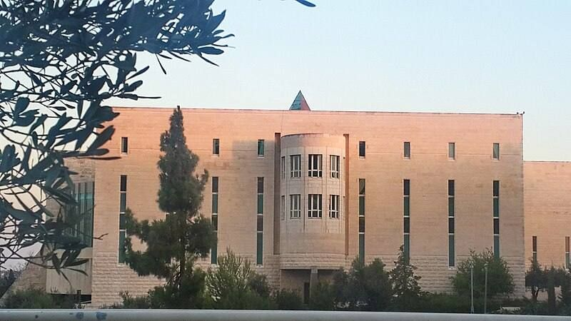
הכניסה מזכירה שער עתיק, ומעליה פירמידה שמזכירה בנייה מימי בית שני. הבניין עשוי אבן ירושלמית שמסמלת את הכותל. הכניסה חינם, בתיאום מראש, וגם סיורים מודרכים.
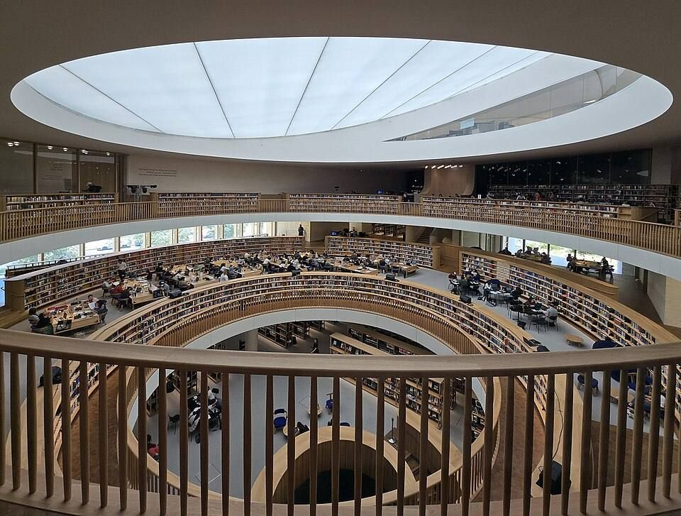
הספרייה של העם היהודי, עם כתבי יד נדירים. בניין חדש ליד הכנסת, שנפתח ב־2023, עם תערוכות לקהל.הרחבה, לא מהספר
מצגת התמונות הרשמית, ומתוך מצגת ירושלים של המגמה.
הר הזיכרון
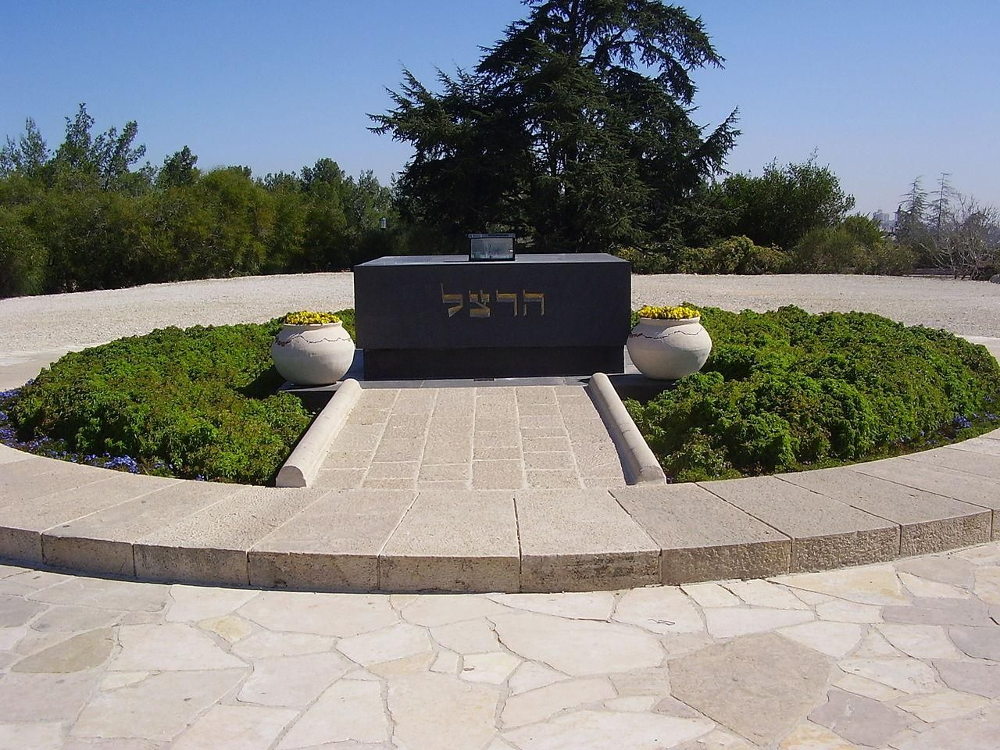
נקרא על שם בנימין זאב הרצל, חוזה המדינה. על ההר:
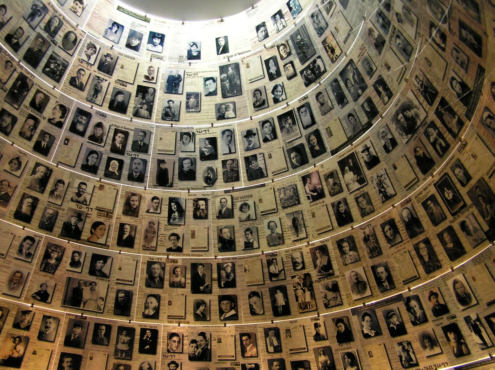
המוסד הרשמי להנצחת השואה, צמוד להר הרצל. ביד ושם:
נשאל בבגרות: "הר הרצל נקרא גם הר הזיכרון. בחר שני אתרים שנמצאים על הר הרצל, ותאר אותם בקצרה".
עצירה לתרגול · עונים בסטודיו
עיר של מוזיאונים
| מוזיאון | מה מוצג | למי מתאים |
|---|---|---|
| מוזיאון ישראל | ארכאולוגיה, אמנות ויהדות. דגם ירושלים בימי בית שני, והיכל הספר עם המגילות הגנוזות מקומראן | כל המגזרים, משפחות, תיירות תרבות |
| יד ושם | תולדות השואה והנצחת הנספים | תיירות יהודית, משלחות נוער, אורחים רשמיים |
| מוזיאון הרצל | חייו של הרצל וראשית הציונות | תיירות יהודית, נוער, תגלית |
| מוזיאון ארצות המקרא | ממצאים ארכאולוגיים מארצות התנ"ךהרחבה | צליינים, אוהבי היסטוריה |
| מוזיאון רוקפלר | ממצאים ארכאולוגיים מחפירות בארץהרחבה | אוהבי ארכאולוגיה |
| מוזיאון קו התפר, גבעת התחמושת | ירושלים המחולקת ומלחמת ששת הימים (נושא 2) | תיירות יהודית, נוער |
| מגדל דוד | תולדות ירושלים (נושא 3) | כל המגזרים |
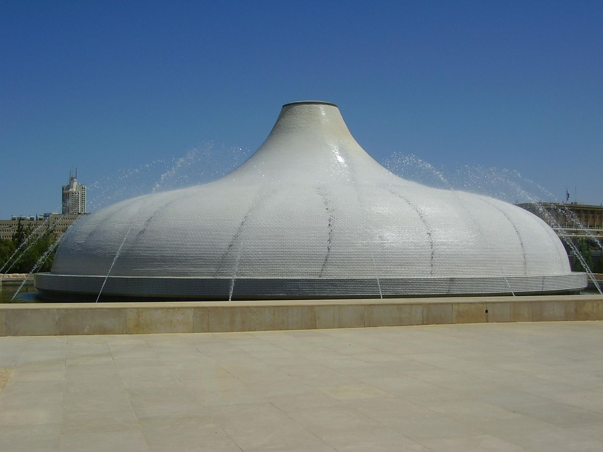
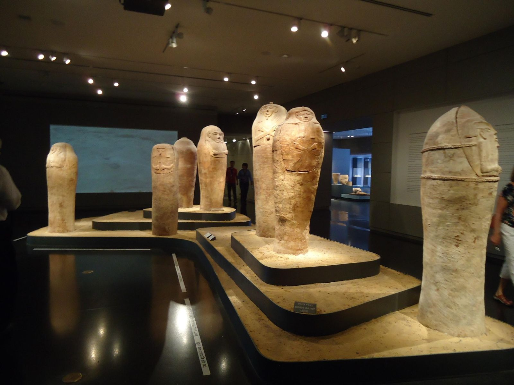
נשאל בבגרות: שלושה מוזיאונים, מה מוצג בכל אחד ולאיזה מגזר הוא מתאים · שני מוזיאונים שמציגים ממצאים ארכאולוגיים.
הר הצופים וטיילת ארמון הנציב
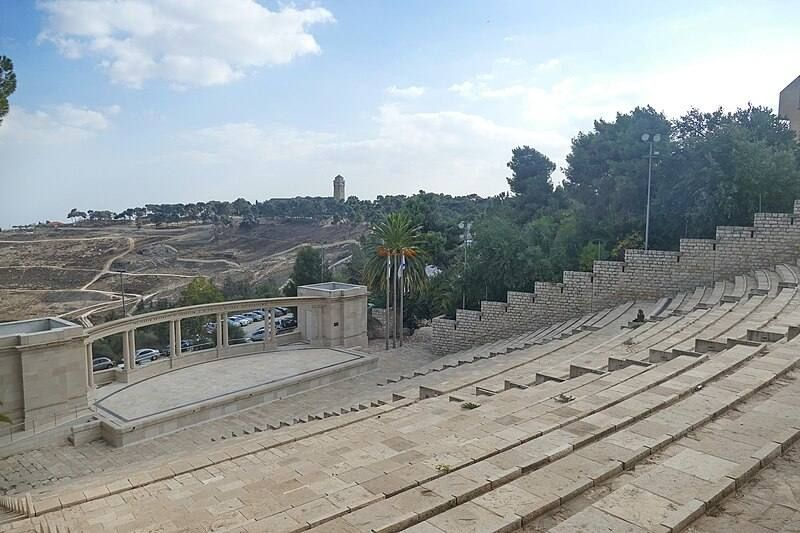
פסגתו צופה על העיר העתיקה, על העיר החדשה ועל מדבר יהודה. על ההר:
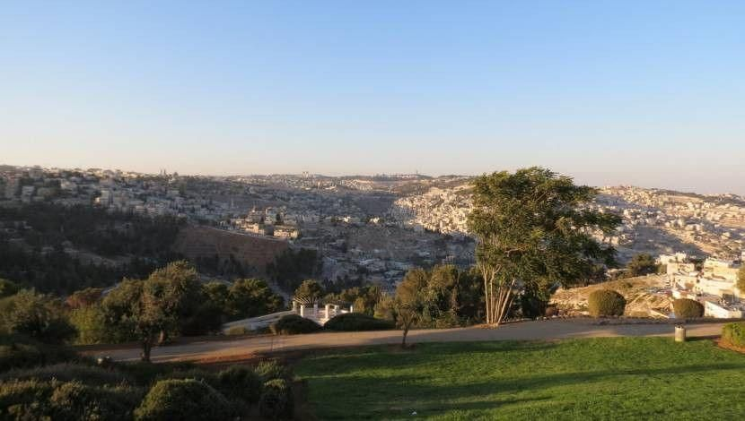
טיילת בדרום העיר שמשקיפה על העיר העתיקה ועל מדבר יהודה. הליכה נעימה ורגועה לכל הגילאים, מותאמת לעגלות ולכיסאות גלגלים.
הר הזיתים (נושא 5) הוא נקודת התצפית השלישית על העיר העתיקה.
נשאל בבגרות: "בחר שניים מבין האתרים השוכנים על הר הצופים ותאר אותם" · שני הרים שמהם יש תצפית על העיר העתיקה.
בילוי ופנאי
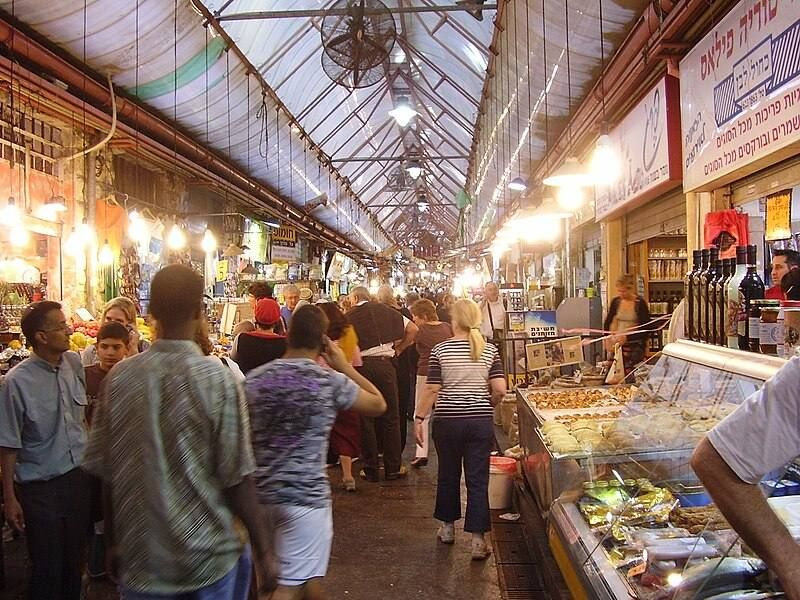
השוק המרכזי של העיר: פירות וירקות, מאפיות, מעדניות ותבלינים. בערב הדוכנים נסגרים, והשוק הופך למתחם בילוי לילי של ברים ומסעדות.
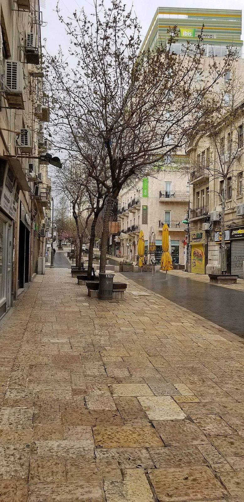
רחובות להולכי רגל במרכז העיר: חנויות, בתי קפה, נגני רחוב, ובלילה מסעדות ופאבים.
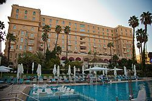
מלון פאר מימי המנדט הבריטי, שמשמש גם בית הארחה רשמי לאורחי המדינה. מהבולטים במלונות ישראל.
גן החיות התנ"כי: בעלי חיים שמוזכרים בתנ"ך, ומרכז המבקרים "תיבת נח". גם אגף הנוער במוזיאון ישראל.
שוק מחנה יהודה, התחנה הראשונה: תחנת הרכבת הוותיקה ששוחזרה למתחם מסעדות ותרבות, וממילא, מדרחוב של חנויות מול שער יפו.הרחבה
נשאל בבגרות 2024: ארבעה אתרים בירושלים החדשה (המערבית): מוזיאון, בילוי לילי, בילוי עם ילדים קטנים, וסמל שלטון שפתוח למבקרים.
עצירה לתרגול · עונים בסטודיו
מסביב לירושלים
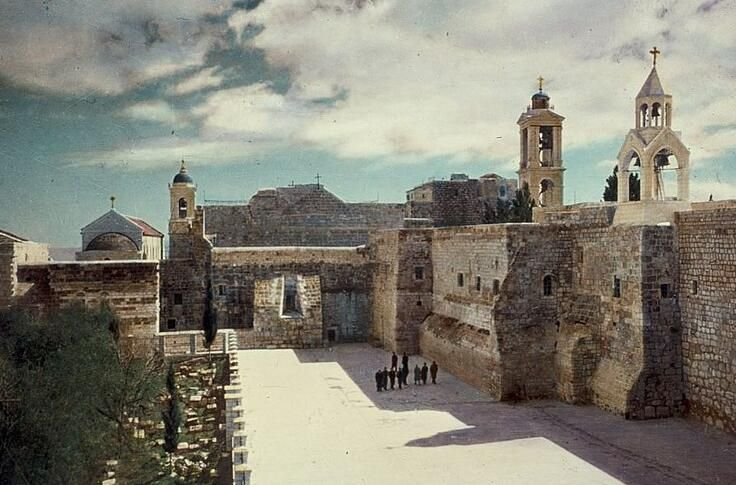
לפי האמונה הנוצרית, מקום הולדתו של ישו. במרכז העיר כנסיית המולד, מהכנסיות העתיקות בעולם, ולידה כיכר האבוס. מוקד עלייה לרגל לנוצרים, בעיקר בחג המולד.
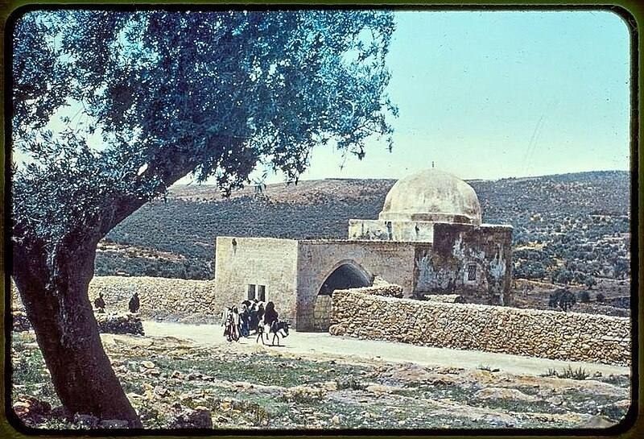
בכניסה לבית לחם. לפי המסורת, קבורה כאן רחל אמנו. מקום תפילה ליהודים, בעיקר לנשים.
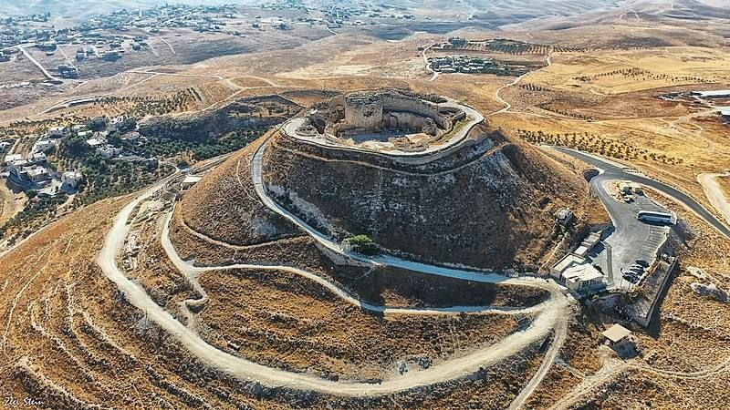
ארמון־מבצר שבנה הורדוס על הר בצורת חרוט בשולי מדבר יהודה. בו נמצא, לפי החוקרים, גם קברו.הרחבה
לפי המסורת, קבורים כאן אברהם, יצחק ויעקב, ושרה, רבקה ולאה. המקום קדוש ליהודים וגם למוסלמים, שקוראים לו מסגד אל־אברהימי. המבנה מימי הורדוס.
על הדרך לירושלים: יד לשריון, אתר הנצחה ומוזיאון של חיל השריון, ומנזר השתקנים עם יקב.הרחבה
נשאל בבגרות: מה מושך את התייר הנוצרי לבית לחם, ומה מושך את התייר היהודי ואת התייר המוסלמי לחברון.
בית לחם וחברון נמצאות בשטח שבשליטה פלסטינית, והכניסה אליהן תלויה במצב הביטחוני ובהנחיות. כדאי לבדוק לפני כל סיור.
מושגים לבגרות
אירוע תרבותי ועסקי בינלאומי שמתקיים בישראל מאז 1963. מטרתו לחשוף ספרות, סופרים ומו"לים מהעולם, ולחבר ביניהם לשיתופי פעולה, תרגומים, זכויות יוצרים והפצה.
איפה: בנייני האומה, ירושלים. מתי: אחת לשנתיים, בדרך כלל בפברואר.
בירושלים כי היא בירת התרבות והספר. היריד מביא לעיר תיירות עסקים ותיירות תרבות.
World Tourism Organization
ארגון בינלאומי המסונף לאו"ם, ומושבו במדריד. תפקידו לאסוף נתונים מכל ארצות התיירות בעולם, לנתח אותם ולתת תחזית על ההתפתחויות הצפויות בעולם התיירות.
לא לבלבל עם ארגון הסחר העולמי, שגם הוא נקרא WTO. מ־2024 הארגון נקרא UN Tourism.הרחבה, לא מהספר
עצירה לתרגול · עונים בסטודיו
שאלות סיכום בסגנון בגרות
לסיום
סיימנו את חבל ירושלים.